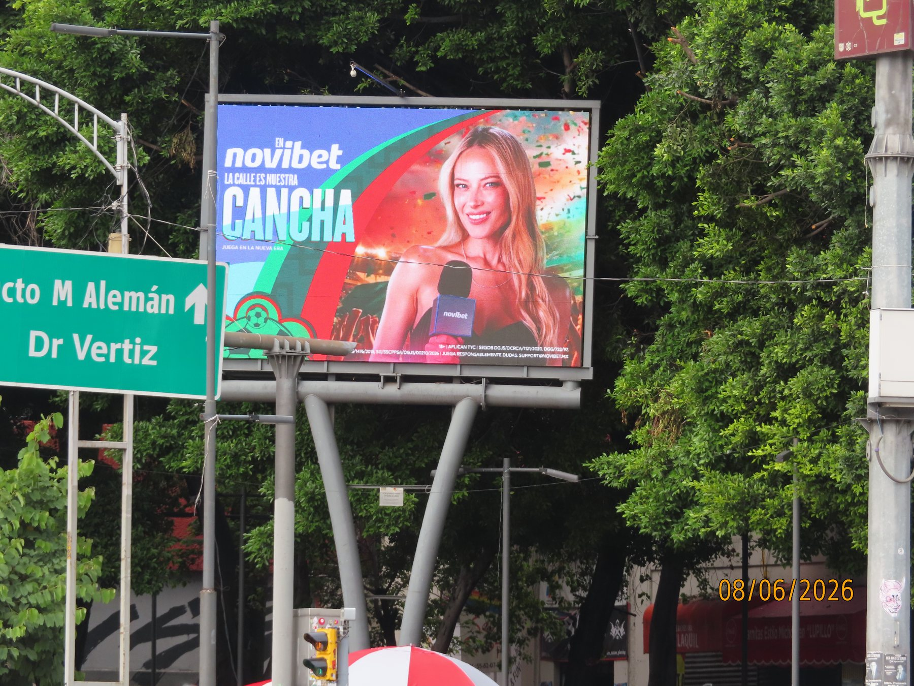
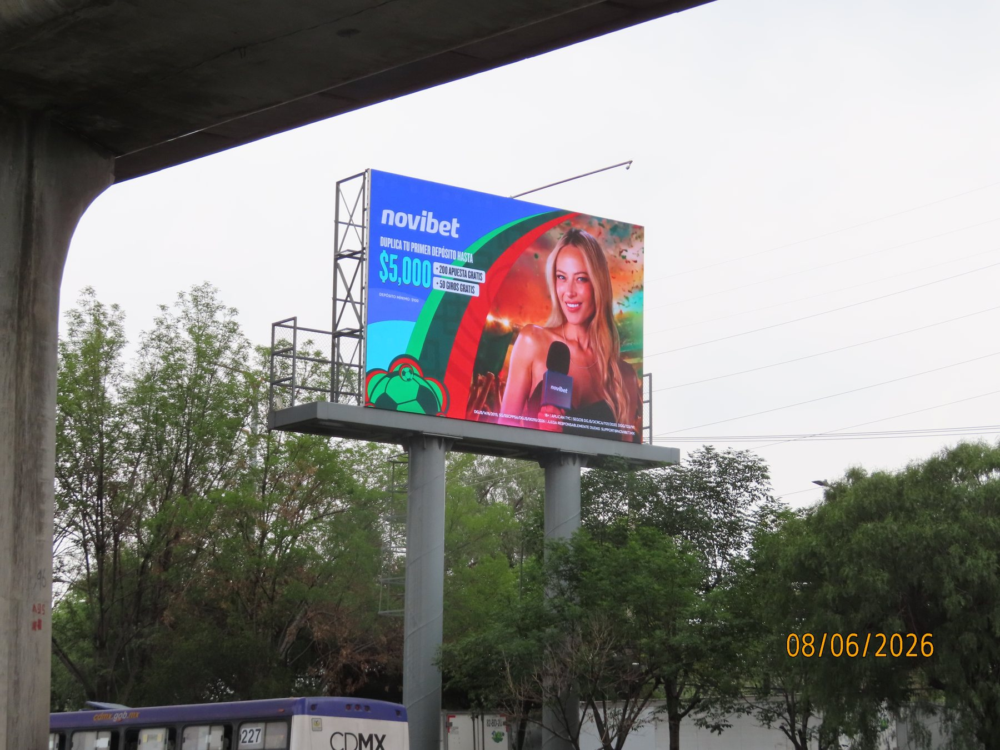
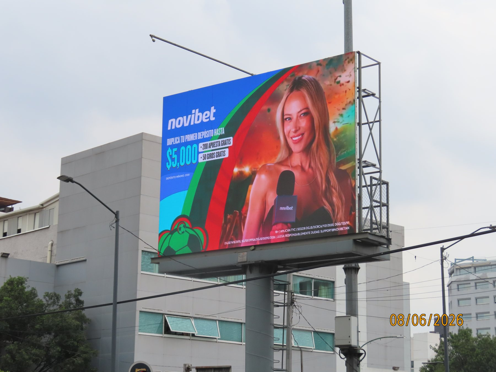

BILLBOARDS STREET · PROOF OF POSTING
Testigos Billboards Street
Consulta los testigos por ubicación. La evidencia se mantiene fuera del reporte principal para conservar una lectura ejecutiva y limpia.
18 ubicacionesBillboards Street · CDMX
Videos por ubicación
Dejamos los videos debajo de la galería para no cargar la página principal. Aquí puedes abrir la evidencia en video disponible por sitio.

